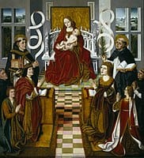
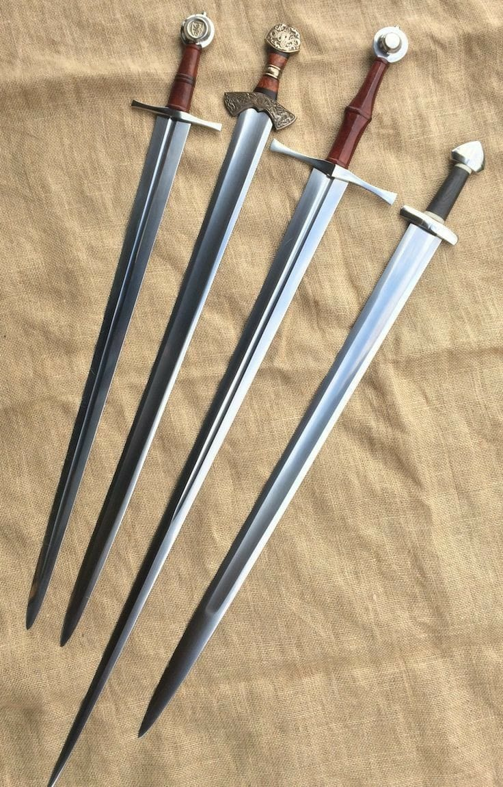
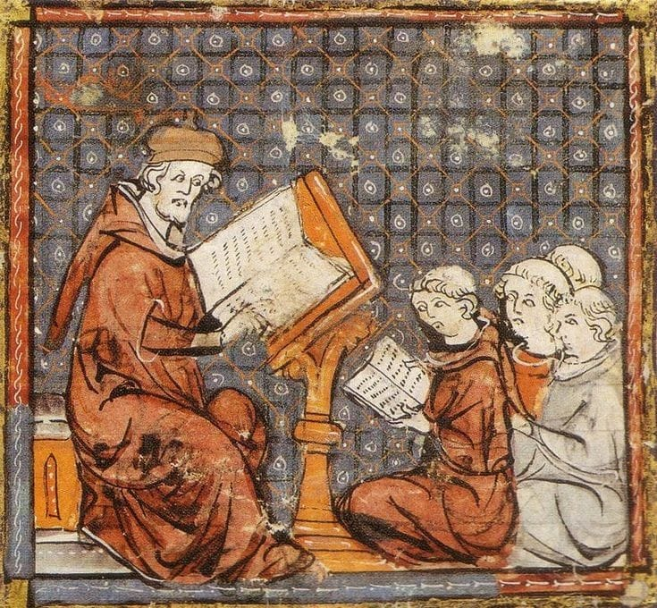
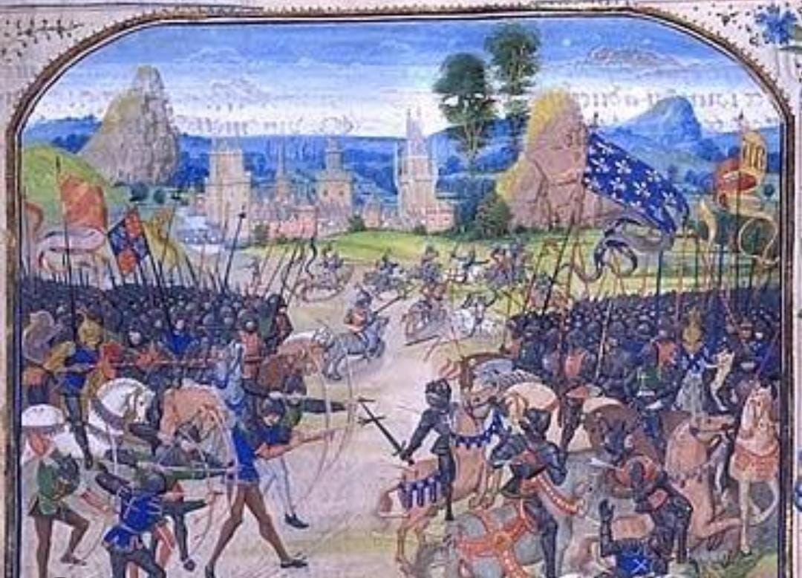

Publicado el sabado 25 de Mayo del 2024
Durante la Plena Edad Media (entre los siglos XI y XIII), Europa occidental vivió una etapa de crecimiento económico. Esto se debió en gran medida a las innovaciones técnicas y tecnológicas en el campo (roturaciones, rotación trienal, mejoras en el arado, molinos), que permitieron producir excedentes productivos. Estos excedentes impulsaron, a su vez, el comercio y la producción artesanal en las ciudades.
Los cambios culturales de la Baja Edad Media se manifestaron en una nueva forma de religiosidad, caracterizada por el culto a la Virgen María y la expansión de las órdenes mendicantes, como los franciscanos y los dominicos, que hacen de la predicación en el contexto urbano su forma de vida.
Durante la Baja Edad Media, el conflicto, la negociación y el pacto fueron la tónica general de la relación entre el clero secular y regular. Se generaron numerosos problemas, pleitos y concordias entre los obispos y párrocos, de una parte, y los monasterios, de la otra. Dichos conflictos comenzaron desde la fundación de un determinado cenobio, a la que se opusieron los diocesanos. Los problemas derivaban de los intentos de la clerecía secular de poner bajo su jurisdicción a los monasterios, que trataron de evitarla y depender directamente de la Santa Sede. Los conflictos también se produjeron por las numerosas exenciones tributarias de las que gozaban los monasterios y del cada vez mayor número de personas que confiaban los sacramentos, oficios y entierros a la clerecía regular. Todo ello ponía en peligro la preeminencia y los ingresos de catedrales y parroquias.
Durante la Alta Edad Media el cristianismo se consolidó en Europa y llegó a pueblos situados fuera del ámbito romano (eslavos, magiares, germanos) a la vez que se consolida el poder de los musulmanes en Medio Oriente y el norte de África. En lo político, está marcada por la existencia de dos grandes imperios; el romano de Oriente y el Califato, junto con la aparición en Occidente de los reinos romano-bárbaros y la aparición del efímero Imperio carolingio. En lo cultural, el imperio de Oriente desarrolla una cultura cristiana de lengua griega, preserva gran parte del saber de la Antigüedad, pero desarrollado de manera propia, el Levante, Egipto, el norte de África y la península ibérica se integran en la naciente cultura árabe islámica y en Occidente los monasterios cumplen el rol de transmitir los restos de la cultura latina, mientras se desarrollan las lenguas romances
Se trató de un largo período de transformación política y social en Europa, pues implicó la caída y desaparición de la cultura clásica de la Antigüedad grecorromana y el surgimiento de un nuevo balance de fuerzas entre el teocentrismo cristiano y el musulmán. La composición étnica de Europa varió enormemente, conforme los pueblos germánicos nómadas que migraron al antiguo Imperio Romano se asentaron y formaron los reinos romano-germanos o reinos germánicos, a lo largo y ancho del antiguo territorio imperial. A esta invasión prosiguió una segunda oleada, de vikingos, magiares, eslavos y sarracenos, hacia el siglo IX
Por guerra medieval se entiende el tipo de guerra librado en el período histórico de la Edad Media, definida por las características propias del tipo de enfrentamientos librados en esta época, basados en el control de plazas fuertes. La visión tradicional de las guerras europeas de la Edad Media sostenía que los caballeros eran los dueños de los campos de batalla. Estos se lanzarían a la carga diezmando y arrollando a la infantería campesina que encontraban a su paso, mientras sus afines corrían a su encuentro para decidir el resultado del enfrentamiento.
la edad media y la baja edad media tienen una epoca que se llama "Las crusadas" eso es el decendalase despues del feudalismo osea que es despues de la baja edad media, al rededor del siglo XV